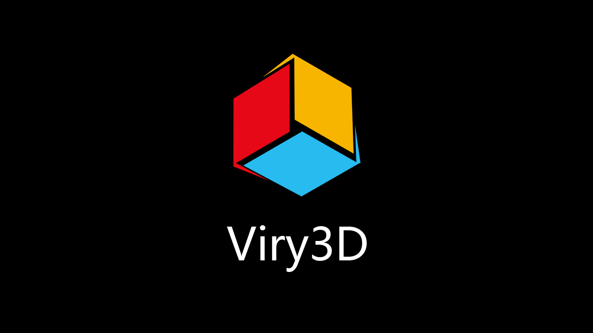

Viry3D
C++跨平台3D游戏引擎。
支持Windows、Android、iOS、macOS和Web。
Stack
邮箱：stackos@qq.com
QQ交流群：428374717
引擎功能
编程语言
- C++11
平台 & 3D API支持
- Vulkan, OpenGL ES 2.0/3.0
- Windows, Android, iOS, macOS, Web(基于WebAssembly)
Mesh
- 使用Unity3D导出场景和网格数据
- 包含材质和纹理导出
动画
- 使用Unity3D导出动画数据
-
支持骨骼动画
- 不同动作间的权重混合
- 4骨骼权重蒙皮
- 蒙皮硬件加速
- 基于贝塞尔曲线的的AnimationCurve
效果
- Camera
- Mesh Renderer
- SkinnedMesh Renderer
- Light
- Skybox
- Render To Texture
- FXAA
- PostEffect Blur
- Shadow Map
UI
- Canvas Renderer
- Sprite
- Label
- Freetype Font
- Button
输入
- 鼠标、键盘、触摸事件处理
其它
- 文件IO
- UTF8、UTF32字符串编码
- 数学库
Viry3D is hosted on GitHub